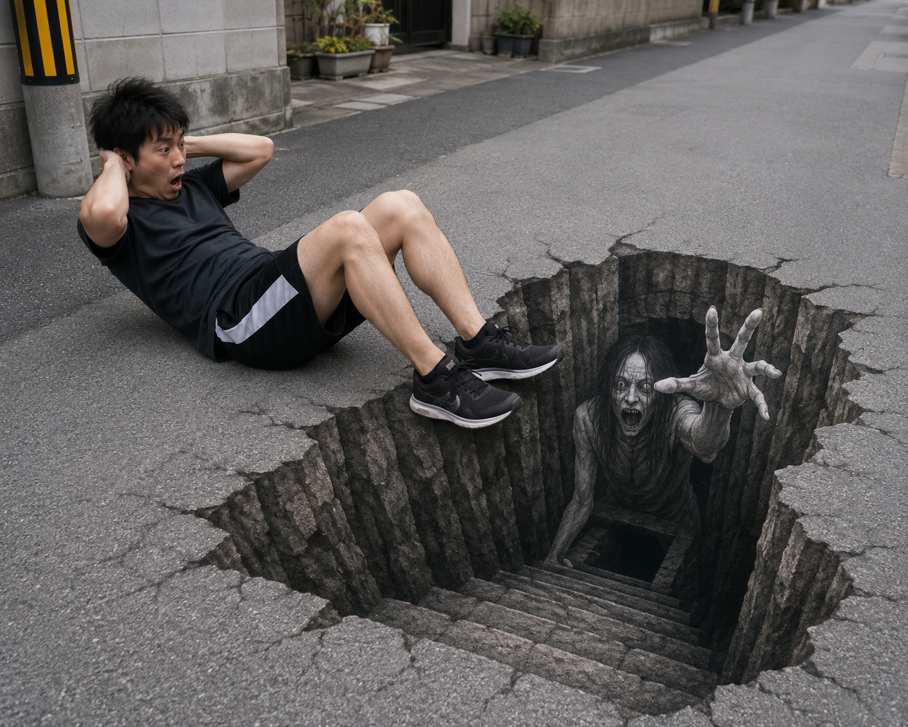

Webエンジニア志望
出身地：横浜市
学歴：横浜市立大学
私はWebエンジニアを志望しています。 Webサイト制作を通じて利用者に価値を提供することに魅力を感じ、 HTML・CSS・JavaScriptを中心に学習と実践を続けてきました。
約3年間にわたりWebサイト制作に携わり、 デザイン調整やページ作成、コンテンツ更新などの経験を積んできました。
制作・運用実績を見る私の強みは、コミュニケーションを積極的に図りながら チームワークをまとめる力です。
メンバーとの情報共有や課題解決を意識し、 円滑なプロジェクト進行に貢献できます。 技術面だけでなく、人との協力を大切にしながら より良い成果を生み出せるエンジニアを目指しています。